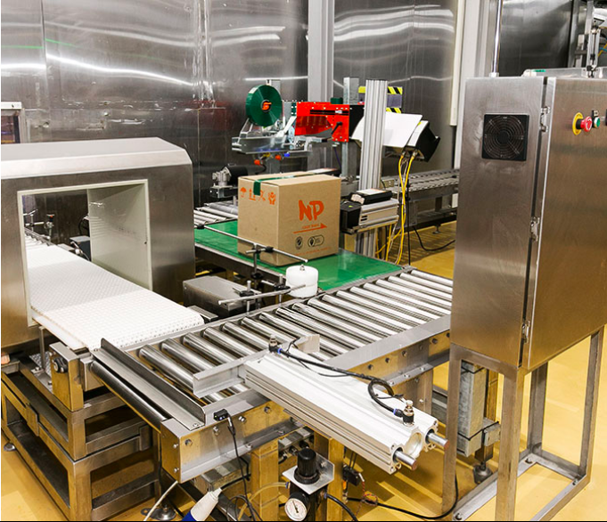

日本国内向け調味料の開発・製造販売
日本国内で使用されている調味料の価格を抑えたいお客様向けに原料の安いシンガポールで製造し日本国内渡しでコストを下げて頂くサービスです。勿論、日本国内の食品原料規格に合致した商品をお届けします。
海外で作られ最終商品を日本国内で販売する商品に使用される調味料の開発・製造販売
海外の自社工場又は、協力工場で商品を作り最終商品を日本国内で販売されている商品に使用する原料・調味料を供給させて頂くサービスです。 日本より調味料を持ち込むとコスト高になる上、輸出・輸入手続きが煩雑で時間がかかる。 現地で調達すると品質や日本国内の食品規格に合わない原料を使用される心配がある。 そのような問題を解決させて頂き現地価格・日本品質で調味料を現地工場にお届けさせて頂きます。
日系企業が海外で現地向けとして製造される商品に使用される調味料の開発・製造販売
最近、日系企業のお客様が現地で現地向け商品を製造販売される商売が増えて来ましたが、現地の調味料では、品質に不安があり、現地の食品規格(HALAL等)に精通していない問題を解決させて頂き、現地に合った味・規格で現地価格・日本品質の調味料をお届けさせて頂くサービスです。
産・販売委託(OEM)
日本からだと価格が合わない。 相手国の食品規格ライセンスの取得が出来ない。(HALAL、HACCP等) 現地に工場を設立したいが、十分な商売がない。 そのようなお客様にN.P.シンガポール社のブレンド設備やライセンス等をご利用頂くサービスで守秘義務契約を締結後、原料・添加剤・改良剤等をお客様に変わり製造・販売させて頂くサービスです。
